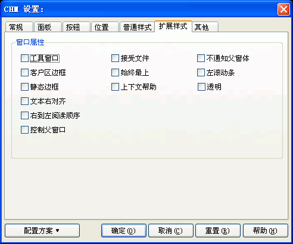

您可以通过在编译设置对话框里按"CHM设置..."按钮, 然后在"CHM设置"对话框里选取"扩展样式"跳格看到这个对话框。关于这个对话框的使用请看下面的具体描述.

如果您不是程序员或不需要为程序制作具有特殊属性的帮助文件，可以忽略这里的全部选项。
这里的属性与WIN32系统API的 SetWindowLong 和 CreateWindowEX 里定义的窗口属性相同，如果您确实需要为CHM的窗口定义一些特殊的窗口属性，请直接参考相应的API函数说明，下面只是简单解释一下，具体请参看相关的API说明。
窗口属性 / 工具窗口:
窗口属性 / 接受文件:
窗口可以接受拖拽操作（与DWORD：WS_EX_ACCEPTFILES的值相同）
窗口属性 / 不通知父窗体:
窗口不通知父窗体（与DWORD：WS_EX_NOPARENTNOTIFY的值相同）
窗口属性 / 客户区边框:
窗口有凹陷边框（与DWORD：WS_EX_CLIENTEDGE的值相同）
窗口属性 / 始终最上:
窗口始终在其他窗口的最上端（与DWORD：WS_EX_TOPMOST的值相同）
窗口属性 / 左滚动条:
窗口有左滚动条（与DWORD：WS_EX_LEFTSCROLLBAR的值相同）
窗口属性 / 静态边框:
窗口有三维边框（与DWORD：WS_EX_STATICEDGE的值相同）
窗口属性 / 上下文帮助:
窗口的标题栏上有支持上下文相关的按钮（与DWORD：WS_EX_CONTEXTHELP的值相同）
窗口属性 / 透明:
窗口有透明属性（与DWORD：WS_EX_TRANSPARENT的值相同）
窗口属性 / 文本右对齐:
窗口里的文字右对齐（与DWORD：WS_EX_RIGHT的值相同）
窗口属性 / 右到左阅读顺序:
窗口里的文字采用从右到左的阅读顺序（与DWORD：WS_EX_RTLREADING的值相同）
窗口属性 / 控制父窗口:
允许按TAB键来切换不同的窗口（与DWORD：WS_EX_CONTROLPARENT的值相同）
| 版权所有 © 2000-2007 国华软件 保留全部权利. |